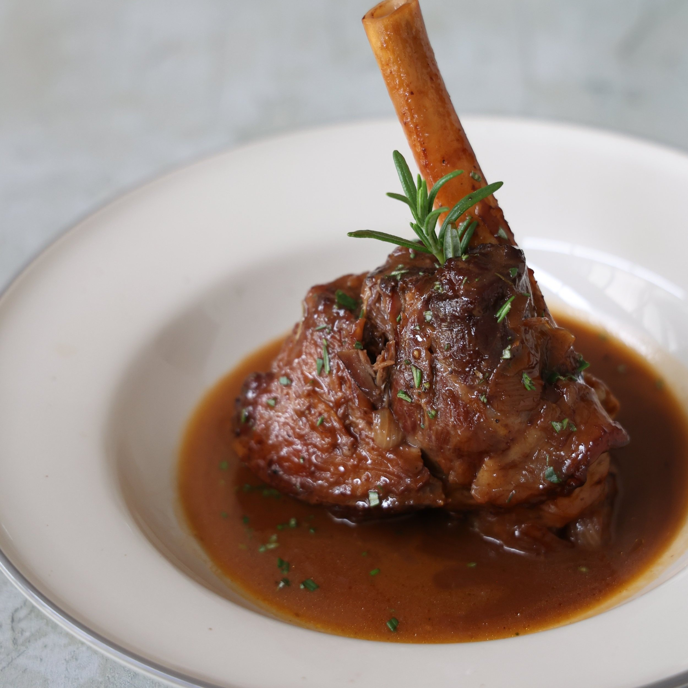

Rosemary Braised Lamb Shanks

Description
Lamb shanks braised in red wine with fresh rosemary, garlic, and tomatoes. Excellent served with polenta or roasted garlic mashed potatoes, my family's favorite, to soak up the wonderful sauce.
This is a fantastic dish to make for company, as all the prep work is done at the beginning. All you have to do is wait.
Ingredients
- Lamb shanks: This recipe makes six lamb shanks. If you have more or less, you’ll need to adjust the recipe.
- Seasonings: Lamb shanks are seasoned with salt, pepper, fresh garlic, fresh rosemary, and fresh thyme.
- Olive oil: Cook the lamb shanks in olive oil until they are brown on all sides before you cook them with the rest of the ingredients.
- Vegetables: You’ll need onions, carrots, and canned whole peeled tomatoes.
- Red wine: You don’t need to use your most expensive bottle, but make sure to use a wine you wouldn’t mind sipping.
- Broth: Use store-bought or homemade beef broth and chicken broth
Steps
- Cook the lamb shanks in oil until they are brown on all sides.
- Add carrots, onions, and garlic to the pot and sauté. Stir in the remaining ingredients.
- Return the shanks to the pot, bring to a boil, cover, and simmer until the meat is tender.
- Uncover the pot and simmer for about 20 minutes, then remove the shanks.
- Boil the sauce until thick, then spoon it over the lamb shanks to serve.